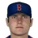
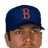
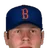
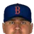
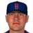
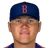
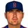
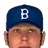

Franchise record book · MLB
Brooklyn Gothams
Seasons covered: 2002–2002. Only games played for this franchise count.
This club has no pre-2002 history in the export, so its record book is the 2002 season to date. Rate records need 3.1 PA or 1 inning per team game.
Home runs
| # | Player | Season | Team | Home runs |
|---|---|---|---|---|
| #1 | Bobby Higginson • | 2002 (MLB) |  Brooklyn Gothams Brooklyn Gothams | 8 |
| #2 | Derrek Lee • | 2002 (MLB) | Brooklyn Gothams | 7 |
| #3 | Moises Alou • | 2002 (MLB) | Brooklyn Gothams | 6 |
| #4 |  Ben Petrick • | 2002 (MLB) | Brooklyn Gothams | 5 |
| #5 | Jack Wilson • | 2002 (MLB) | Brooklyn Gothams | 5 |
| #6 | Fernando Tatis • | 2002 (MLB) | Brooklyn Gothams | 5 |
| #7 |  Alex Cora • | 2002 (MLB) | Brooklyn Gothams | 4 |
| #8 | Angel Echevarria • | 2002 (MLB) | Brooklyn Gothams | 3 |
| #9 | Yorvit Torrealba • | 2002 (MLB) | Brooklyn Gothams | 2 |
| #10 | Koyie Hill • | 2002 (MLB) | Brooklyn Gothams | 2 |
Hits
| # | Player | Season | Team | Hits |
|---|---|---|---|---|
| #1 | Bobby Higginson • | 2002 (MLB) | Brooklyn Gothams | 55 |
| #2 | Moises Alou • | 2002 (MLB) | Brooklyn Gothams | 41 |
| #3 | Derrek Lee • | 2002 (MLB) | Brooklyn Gothams | 41 |
| #4 | Jack Wilson • | 2002 (MLB) | Brooklyn Gothams | 40 |
| #5 | Fernando Tatis • | 2002 (MLB) | Brooklyn Gothams | 38 |
| #6 | Alex Cora • | 2002 (MLB) | Brooklyn Gothams | 36 |
| #7 | Ben Petrick • | 2002 (MLB) | Brooklyn Gothams | 35 |
| #8 | Angel Echevarria • | 2002 (MLB) | Brooklyn Gothams | 30 |
| #9 | Yorvit Torrealba • | 2002 (MLB) | Brooklyn Gothams | 23 |
| #10 | Craig Wilson • | 2002 (MLB) | Brooklyn Gothams | 16 |
RBI
| # | Player | Season | Team | RBI |
|---|---|---|---|---|
| #1 | Moises Alou • | 2002 (MLB) | Brooklyn Gothams | 23 |
| #2 | Alex Cora • | 2002 (MLB) | Brooklyn Gothams | 22 |
| #3 | Jack Wilson • | 2002 (MLB) | Brooklyn Gothams | 19 |
| #4 | Derrek Lee • | 2002 (MLB) | Brooklyn Gothams | 19 |
| #5 | Bobby Higginson • | 2002 (MLB) | Brooklyn Gothams | 19 |
| #6 | Fernando Tatis • | 2002 (MLB) | Brooklyn Gothams | 19 |
| #7 | Ben Petrick • | 2002 (MLB) | Brooklyn Gothams | 18 |
| #8 | Yorvit Torrealba • | 2002 (MLB) | Brooklyn Gothams | 12 |
| #9 | Angel Echevarria • | 2002 (MLB) | Brooklyn Gothams | 11 |
| #10 | Craig Wilson • | 2002 (MLB) | Brooklyn Gothams | 6 |
Runs
| # | Player | Season | Team | Runs |
|---|---|---|---|---|
| #1 | Derrek Lee • | 2002 (MLB) | Brooklyn Gothams | 30 |
| #2 | Bobby Higginson • | 2002 (MLB) | Brooklyn Gothams | 29 |
| #3 | Fernando Tatis • | 2002 (MLB) | Brooklyn Gothams | 24 |
| #4 | Ben Petrick • | 2002 (MLB) | Brooklyn Gothams | 20 |
| #5 | Moises Alou • | 2002 (MLB) | Brooklyn Gothams | 18 |
| #6 | Jack Wilson • | 2002 (MLB) | Brooklyn Gothams | 18 |
| #7 | Angel Echevarria • | 2002 (MLB) | Brooklyn Gothams | 17 |
| #8 | Alex Cora • | 2002 (MLB) | Brooklyn Gothams | 15 |
| #9 | Yorvit Torrealba • | 2002 (MLB) | Brooklyn Gothams | 13 |
| #10 | Koyie Hill • | 2002 (MLB) | Brooklyn Gothams | 4 |
Stolen bases
| # | Player | Season | Team | Stolen bases |
|---|---|---|---|---|
| #1 | Alex Cora • | 2002 (MLB) | Brooklyn Gothams | 6 |
| #2 | Ben Petrick • | 2002 (MLB) | Brooklyn Gothams | 4 |
| #3 | Jack Wilson • | 2002 (MLB) | Brooklyn Gothams | 3 |
| #4 | Derrek Lee • | 2002 (MLB) | Brooklyn Gothams | 3 |
| #5 | Moises Alou • | 2002 (MLB) | Brooklyn Gothams | 2 |
| #6 | Bobby Higginson • | 2002 (MLB) | Brooklyn Gothams | 2 |
| #7 | Fernando Tatis • | 2002 (MLB) | Brooklyn Gothams | 2 |
| #8 | Julio Ramirez • | 2002 (MLB) | Brooklyn Gothams | 1 |
| #9 | Craig Wilson • | 2002 (MLB) | Brooklyn Gothams | 1 |
| #10 | Bruce Aven • | 2002 (MLB) | Brooklyn Gothams | 0 |
Doubles
| # | Player | Season | Team | Doubles |
|---|---|---|---|---|
| #1 | Moises Alou • | 2002 (MLB) | Brooklyn Gothams | 12 |
| #2 | Ben Petrick • | 2002 (MLB) | Brooklyn Gothams | 11 |
| #3 | Derrek Lee • | 2002 (MLB) | Brooklyn Gothams | 11 |
| #4 | Jack Wilson • | 2002 (MLB) | Brooklyn Gothams | 10 |
| #5 | Fernando Tatis • | 2002 (MLB) | Brooklyn Gothams | 8 |
| #6 | Alex Cora • | 2002 (MLB) | Brooklyn Gothams | 7 |
| #7 | Yorvit Torrealba • | 2002 (MLB) | Brooklyn Gothams | 7 |
| #8 | Angel Echevarria • | 2002 (MLB) | Brooklyn Gothams | 5 |
| #9 | Bobby Higginson • | 2002 (MLB) | Brooklyn Gothams | 5 |
| #10 | Julio Ramirez • | 2002 (MLB) | Brooklyn Gothams | 2 |
Triples
| # | Player | Season | Team | Triples |
|---|---|---|---|---|
| #1 | Angel Echevarria • | 2002 (MLB) | Brooklyn Gothams | 1 |
| #2 | Derrek Lee • | 2002 (MLB) | Brooklyn Gothams | 1 |
| #3 | Fernando Tatis • | 2002 (MLB) | Brooklyn Gothams | 1 |
| #4 | Jay Canizaro • | 2002 (MLB) | Brooklyn Gothams | 1 |
| #5 | Koyie Hill • | 2002 (MLB) | Brooklyn Gothams | 1 |
| #6 | Bruce Aven • | 2002 (MLB) | Brooklyn Gothams | 0 |
| #7 | Moises Alou • | 2002 (MLB) | Brooklyn Gothams | 0 |
| #8 | Ben Petrick • | 2002 (MLB) | Brooklyn Gothams | 0 |
| #9 | Jack Wilson • | 2002 (MLB) | Brooklyn Gothams | 0 |
| #10 | Alex Cora • | 2002 (MLB) | Brooklyn Gothams | 0 |
Walks
| # | Player | Season | Team | Walks |
|---|---|---|---|---|
| #1 | Derrek Lee • | 2002 (MLB) | Brooklyn Gothams | 21 |
| #2 | Fernando Tatis • | 2002 (MLB) | Brooklyn Gothams | 18 |
| #3 | Ben Petrick • | 2002 (MLB) | Brooklyn Gothams | 17 |
| #4 | Moises Alou • | 2002 (MLB) | Brooklyn Gothams | 15 |
| #5 | Angel Echevarria • | 2002 (MLB) | Brooklyn Gothams | 15 |
| #6 | Bobby Higginson • | 2002 (MLB) | Brooklyn Gothams | 14 |
| #7 | Jack Wilson • | 2002 (MLB) | Brooklyn Gothams | 11 |
| #8 | Yorvit Torrealba • | 2002 (MLB) | Brooklyn Gothams | 9 |
| #9 | Alex Cora • | 2002 (MLB) | Brooklyn Gothams | 7 |
| #10 | Craig Wilson • | 2002 (MLB) | Brooklyn Gothams | 3 |
Total bases
| # | Player | Season | Team | Total bases |
|---|---|---|---|---|
| #1 | Bobby Higginson • | 2002 (MLB) | Brooklyn Gothams | 84 |
| #2 | Derrek Lee • | 2002 (MLB) | Brooklyn Gothams | 75 |
| #3 | Moises Alou • | 2002 (MLB) | Brooklyn Gothams | 71 |
| #4 | Jack Wilson • | 2002 (MLB) | Brooklyn Gothams | 65 |
| #5 | Fernando Tatis • | 2002 (MLB) | Brooklyn Gothams | 63 |
| #6 | Ben Petrick • | 2002 (MLB) | Brooklyn Gothams | 61 |
| #7 | Alex Cora • | 2002 (MLB) | Brooklyn Gothams | 55 |
| #8 | Angel Echevarria • | 2002 (MLB) | Brooklyn Gothams | 46 |
| #9 | Yorvit Torrealba • | 2002 (MLB) | Brooklyn Gothams | 36 |
| #10 | Craig Wilson • | 2002 (MLB) | Brooklyn Gothams | 20 |
Batting average qualified
| # | Player | Season | Team | Batting average |
|---|---|---|---|---|
| #1 | Bobby Higginson • | 2002 (MLB) | Brooklyn Gothams | .297 |
| #2 | Jack Wilson • | 2002 (MLB) | Brooklyn Gothams | .274 |
| #3 | Fernando Tatis • | 2002 (MLB) | Brooklyn Gothams | .271 |
| #4 | Alex Cora • | 2002 (MLB) | Brooklyn Gothams | .263 |
| #5 | Moises Alou • | 2002 (MLB) | Brooklyn Gothams | .259 |
| #6 | Derrek Lee • | 2002 (MLB) | Brooklyn Gothams | .255 |
| #7 | Ben Petrick • | 2002 (MLB) | Brooklyn Gothams | .238 |
| #8 | Angel Echevarria • | 2002 (MLB) | Brooklyn Gothams | .208 |
| #9 | Yorvit Torrealba • | 2002 (MLB) | Brooklyn Gothams | .200 |
On-base % qualified
| # | Player | Season | Team | On-base % |
|---|---|---|---|---|
| #1 | Fernando Tatis • | 2002 (MLB) | Brooklyn Gothams | .358 |
| #2 | Bobby Higginson • | 2002 (MLB) | Brooklyn Gothams | .351 |
| #3 | Derrek Lee • | 2002 (MLB) | Brooklyn Gothams | .341 |
| #4 | Moises Alou • | 2002 (MLB) | Brooklyn Gothams | .324 |
| #5 | Jack Wilson • | 2002 (MLB) | Brooklyn Gothams | .323 |
| #6 | Ben Petrick • | 2002 (MLB) | Brooklyn Gothams | .317 |
| #7 | Alex Cora • | 2002 (MLB) | Brooklyn Gothams | .300 |
| #8 | Angel Echevarria • | 2002 (MLB) | Brooklyn Gothams | .290 |
| #9 | Yorvit Torrealba • | 2002 (MLB) | Brooklyn Gothams | .264 |
Slugging % qualified
| # | Player | Season | Team | Slugging % |
|---|---|---|---|---|
| #1 | Derrek Lee • | 2002 (MLB) | Brooklyn Gothams | .466 |
| #2 | Bobby Higginson • | 2002 (MLB) | Brooklyn Gothams | .454 |
| #3 | Fernando Tatis • | 2002 (MLB) | Brooklyn Gothams | .450 |
| #4 | Moises Alou • | 2002 (MLB) | Brooklyn Gothams | .449 |
| #5 | Jack Wilson • | 2002 (MLB) | Brooklyn Gothams | .445 |
| #6 | Ben Petrick • | 2002 (MLB) | Brooklyn Gothams | .415 |
| #7 | Alex Cora • | 2002 (MLB) | Brooklyn Gothams | .401 |
| #8 | Angel Echevarria • | 2002 (MLB) | Brooklyn Gothams | .319 |
| #9 | Yorvit Torrealba • | 2002 (MLB) | Brooklyn Gothams | .313 |
OPS qualified
| # | Player | Season | Team | OPS |
|---|---|---|---|---|
| #1 | Fernando Tatis • | 2002 (MLB) | Brooklyn Gothams | .808 |
| #2 | Derrek Lee • | 2002 (MLB) | Brooklyn Gothams | .806 |
| #3 | Bobby Higginson • | 2002 (MLB) | Brooklyn Gothams | .806 |
| #4 | Moises Alou • | 2002 (MLB) | Brooklyn Gothams | .773 |
| #5 | Jack Wilson • | 2002 (MLB) | Brooklyn Gothams | .768 |
| #6 | Ben Petrick • | 2002 (MLB) | Brooklyn Gothams | .732 |
| #7 | Alex Cora • | 2002 (MLB) | Brooklyn Gothams | .701 |
| #8 | Angel Echevarria • | 2002 (MLB) | Brooklyn Gothams | .610 |
| #9 | Yorvit Torrealba • | 2002 (MLB) | Brooklyn Gothams | .577 |
WAR (OOTP)
| # | Player | Season | Team | WAR (OOTP) |
|---|---|---|---|---|
| #1 | Jack Wilson • | 2002 (MLB) | Brooklyn Gothams | 1.3 |
| #2 | Fernando Tatis • | 2002 (MLB) | Brooklyn Gothams | 1.1 |
| #3 | Alex Cora • | 2002 (MLB) | Brooklyn Gothams | 0.8 |
| #4 | Ben Petrick • | 2002 (MLB) | Brooklyn Gothams | 0.6 |
| #5 | Derrek Lee • | 2002 (MLB) | Brooklyn Gothams | 0.5 |
| #6 | Bobby Higginson • | 2002 (MLB) | Brooklyn Gothams | 0.5 |
| #7 | Moises Alou • | 2002 (MLB) | Brooklyn Gothams | 0.4 |
| #8 | Koyie Hill • | 2002 (MLB) | Brooklyn Gothams | 0.3 |
| #9 | Bruce Aven • | 2002 (MLB) | Brooklyn Gothams | 0.1 |
| #10 | Julio Ramirez • | 2002 (MLB) | Brooklyn Gothams | 0.1 |
Wins
| # | Player | Season | Team | Wins |
|---|---|---|---|---|
| #1 | Ted Lilly • | 2002 (MLB) | Brooklyn Gothams | 5 |
| #2 | Mike Smith • | 2002 (MLB) | Brooklyn Gothams | 4 |
| #3 |  Kevin Millwood • | 2002 (MLB) | Brooklyn Gothams | 4 |
| #4 |  Elmer Dessens • | 2002 (MLB) | Brooklyn Gothams | 2 |
| #5 |  Jason Isringhausen • | 2002 (MLB) | Brooklyn Gothams | 2 |
| #6 | Chris George • | 2002 (MLB) | Brooklyn Gothams | 2 |
| #7 | Grant Roberts • | 2002 (MLB) | Brooklyn Gothams | 1 |
| #8 | Wes Obermueller • | 2002 (MLB) | Brooklyn Gothams | 1 |
| #9 |  Jayson Durocher • | 2002 (MLB) | Brooklyn Gothams | 1 |
| #10 | Ken Pumphrey • | 2002 (MLB) | Brooklyn Gothams | 1 |
Strikeouts
| # | Player | Season | Team | Strikeouts |
|---|---|---|---|---|
| #1 | Ted Lilly • | 2002 (MLB) | Brooklyn Gothams | 46 |
| #2 | Kevin Millwood • | 2002 (MLB) | Brooklyn Gothams | 45 |
| #3 |  Erik Hiljus • | 2002 (MLB) | Brooklyn Gothams | 31 |
| #4 | Mike Smith • | 2002 (MLB) | Brooklyn Gothams | 26 |
| #5 | Grant Roberts • | 2002 (MLB) | Brooklyn Gothams | 18 |
| #6 | Jason Isringhausen • | 2002 (MLB) | Brooklyn Gothams | 17 |
| #7 | Chris George • | 2002 (MLB) | Brooklyn Gothams | 14 |
| #8 | Jaime Cerda • | 2002 (MLB) | Brooklyn Gothams | 12 |
| #9 | Wes Obermueller • | 2002 (MLB) | Brooklyn Gothams | 12 |
| #10 | Jayson Durocher • | 2002 (MLB) | Brooklyn Gothams | 11 |
Saves
| # | Player | Season | Team | Saves |
|---|---|---|---|---|
| #1 | Jason Isringhausen • | 2002 (MLB) | Brooklyn Gothams | 9 |
| #2 | Wes Obermueller • | 2002 (MLB) | Brooklyn Gothams | 3 |
| #3 | Chris George • | 2002 (MLB) | Brooklyn Gothams | 1 |
| #4 |  Matt Ginter • | 2002 (MLB) | Brooklyn Gothams | 0 |
| #5 | Ted Lilly • | 2002 (MLB) | Brooklyn Gothams | 0 |
| #6 | Mike Smith • | 2002 (MLB) | Brooklyn Gothams | 0 |
| #7 | Elmer Dessens • | 2002 (MLB) | Brooklyn Gothams | 0 |
| #8 | Erik Hiljus • | 2002 (MLB) | Brooklyn Gothams | 0 |
| #9 | Grant Roberts • | 2002 (MLB) | Brooklyn Gothams | 0 |
| #10 | Jaime Cerda • | 2002 (MLB) | Brooklyn Gothams | 0 |
Innings
| # | Player | Season | Team | Innings |
|---|---|---|---|---|
| #1 | Kevin Millwood • | 2002 (MLB) | Brooklyn Gothams | 62.0 |
| #2 | Ted Lilly • | 2002 (MLB) | Brooklyn Gothams | 57.0 |
| #3 | Erik Hiljus • | 2002 (MLB) | Brooklyn Gothams | 47.2 |
| #4 | Mike Smith • | 2002 (MLB) | Brooklyn Gothams | 47.0 |
| #5 | Chris George • | 2002 (MLB) | Brooklyn Gothams | 27.0 |
| #6 | Grant Roberts • | 2002 (MLB) | Brooklyn Gothams | 24.2 |
| #7 | Wes Obermueller • | 2002 (MLB) | Brooklyn Gothams | 23.0 |
| #8 | Elmer Dessens • | 2002 (MLB) | Brooklyn Gothams | 22.2 |
| #9 | Ken Pumphrey • | 2002 (MLB) | Brooklyn Gothams | 20.0 |
| #10 | Jason Isringhausen • | 2002 (MLB) | Brooklyn Gothams | 18.0 |
Complete games
| # | Player | Season | Team | Complete games |
|---|---|---|---|---|
| #1 | Matt Ginter • | 2002 (MLB) | Brooklyn Gothams | 0 |
| #2 | Ted Lilly • | 2002 (MLB) | Brooklyn Gothams | 0 |
| #3 | Mike Smith • | 2002 (MLB) | Brooklyn Gothams | 0 |
| #4 | Elmer Dessens • | 2002 (MLB) | Brooklyn Gothams | 0 |
| #5 | Erik Hiljus • | 2002 (MLB) | Brooklyn Gothams | 0 |
| #6 | Jason Isringhausen • | 2002 (MLB) | Brooklyn Gothams | 0 |
| #7 | Grant Roberts • | 2002 (MLB) | Brooklyn Gothams | 0 |
| #8 | Jaime Cerda • | 2002 (MLB) | Brooklyn Gothams | 0 |
| #9 | Wes Obermueller • | 2002 (MLB) | Brooklyn Gothams | 0 |
| #10 | Jayson Durocher • | 2002 (MLB) | Brooklyn Gothams | 0 |
Shutouts
| # | Player | Season | Team | Shutouts |
|---|---|---|---|---|
| #1 | Matt Ginter • | 2002 (MLB) | Brooklyn Gothams | 0 |
| #2 | Ted Lilly • | 2002 (MLB) | Brooklyn Gothams | 0 |
| #3 | Mike Smith • | 2002 (MLB) | Brooklyn Gothams | 0 |
| #4 | Elmer Dessens • | 2002 (MLB) | Brooklyn Gothams | 0 |
| #5 | Erik Hiljus • | 2002 (MLB) | Brooklyn Gothams | 0 |
| #6 | Jason Isringhausen • | 2002 (MLB) | Brooklyn Gothams | 0 |
| #7 | Grant Roberts • | 2002 (MLB) | Brooklyn Gothams | 0 |
| #8 | Jaime Cerda • | 2002 (MLB) | Brooklyn Gothams | 0 |
| #9 | Wes Obermueller • | 2002 (MLB) | Brooklyn Gothams | 0 |
| #10 | Jayson Durocher • | 2002 (MLB) | Brooklyn Gothams | 0 |
ERA qualified
| # | Player | Season | Team | ERA |
|---|---|---|---|---|
| #1 | Mike Smith • | 2002 (MLB) | Brooklyn Gothams | 2.68 |
| #2 | Kevin Millwood • | 2002 (MLB) | Brooklyn Gothams | 2.76 |
| #3 | Erik Hiljus • | 2002 (MLB) | Brooklyn Gothams | 3.40 |
| #4 | Ted Lilly • | 2002 (MLB) | Brooklyn Gothams | 3.79 |
WHIP qualified
| # | Player | Season | Team | WHIP |
|---|---|---|---|---|
| #1 | Kevin Millwood • | 2002 (MLB) | Brooklyn Gothams | 1.10 |
| #2 | Ted Lilly • | 2002 (MLB) | Brooklyn Gothams | 1.14 |
| #3 | Erik Hiljus • | 2002 (MLB) | Brooklyn Gothams | 1.17 |
| #4 | Mike Smith • | 2002 (MLB) | Brooklyn Gothams | 1.38 |
K/9 qualified
| # | Player | Season | Team | K/9 |
|---|---|---|---|---|
| #1 | Ted Lilly • | 2002 (MLB) | Brooklyn Gothams | 7.3 |
| #2 | Kevin Millwood • | 2002 (MLB) | Brooklyn Gothams | 6.5 |
| #3 | Erik Hiljus • | 2002 (MLB) | Brooklyn Gothams | 5.9 |
| #4 | Mike Smith • | 2002 (MLB) | Brooklyn Gothams | 5.0 |
WAR (OOTP)
| # | Player | Season | Team | WAR (OOTP) |
|---|---|---|---|---|
| #1 | Kevin Millwood • | 2002 (MLB) | Brooklyn Gothams | 1.8 |
| #2 | Erik Hiljus • | 2002 (MLB) | Brooklyn Gothams | 1.0 |
| #3 | Ted Lilly • | 2002 (MLB) | Brooklyn Gothams | 0.9 |
| #4 | Jason Isringhausen • | 2002 (MLB) | Brooklyn Gothams | 0.8 |
| #5 | Grant Roberts • | 2002 (MLB) | Brooklyn Gothams | 0.5 |
| #6 | Chris George • | 2002 (MLB) | Brooklyn Gothams | 0.3 |
| #7 | Matt Ginter • | 2002 (MLB) | Brooklyn Gothams | 0.2 |
| #8 | Mike Smith • | 2002 (MLB) | Brooklyn Gothams | 0.1 |
| #9 | Wes Obermueller • | 2002 (MLB) | Brooklyn Gothams | 0.0 |
| #10 | Ken Pumphrey • | 2002 (MLB) | Brooklyn Gothams | -0.4 |
Home runs
| # | Player | Years | Home runs |
|---|---|---|---|
| #1 | Bobby Higginson • | 1995–02 | 8 |
| #2 | Derrek Lee • | 1997–02 | 7 |
| #3 | Moises Alou • | 1990–02 | 6 |
| #4 | Ben Petrick • | 1999–02 | 5 |
| #5 | Jack Wilson • | 2001–02 | 5 |
| #6 | Fernando Tatis • | 1997–02 | 5 |
| #7 | Alex Cora • | 1998–02 | 4 |
| #8 | Angel Echevarria • | 1996–02 | 3 |
| #9 | Yorvit Torrealba • | 2001–02 | 2 |
| #10 | Koyie Hill • | 2002–02 | 2 |
Hits
| # | Player | Years | Hits |
|---|---|---|---|
| #1 | Bobby Higginson • | 1995–02 | 55 |
| #2 | Moises Alou • | 1990–02 | 41 |
| #3 | Derrek Lee • | 1997–02 | 41 |
| #4 | Jack Wilson • | 2001–02 | 40 |
| #5 | Fernando Tatis • | 1997–02 | 38 |
| #6 | Alex Cora • | 1998–02 | 36 |
| #7 | Ben Petrick • | 1999–02 | 35 |
| #8 | Angel Echevarria • | 1996–02 | 30 |
| #9 | Yorvit Torrealba • | 2001–02 | 23 |
| #10 | Craig Wilson • | 1998–02 | 16 |
RBI
| # | Player | Years | RBI |
|---|---|---|---|
| #1 | Moises Alou • | 1990–02 | 23 |
| #2 | Alex Cora • | 1998–02 | 22 |
| #3 | Jack Wilson • | 2001–02 | 19 |
| #4 | Derrek Lee • | 1997–02 | 19 |
| #5 | Bobby Higginson • | 1995–02 | 19 |
| #6 | Fernando Tatis • | 1997–02 | 19 |
| #7 | Ben Petrick • | 1999–02 | 18 |
| #8 | Yorvit Torrealba • | 2001–02 | 12 |
| #9 | Angel Echevarria • | 1996–02 | 11 |
| #10 | Craig Wilson • | 1998–02 | 6 |
Runs
| # | Player | Years | Runs |
|---|---|---|---|
| #1 | Derrek Lee • | 1997–02 | 30 |
| #2 | Bobby Higginson • | 1995–02 | 29 |
| #3 | Fernando Tatis • | 1997–02 | 24 |
| #4 | Ben Petrick • | 1999–02 | 20 |
| #5 | Moises Alou • | 1990–02 | 18 |
| #6 | Jack Wilson • | 2001–02 | 18 |
| #7 | Angel Echevarria • | 1996–02 | 17 |
| #8 | Alex Cora • | 1998–02 | 15 |
| #9 | Yorvit Torrealba • | 2001–02 | 13 |
| #10 | Koyie Hill • | 2002–02 | 4 |
Stolen bases
| # | Player | Years | Stolen bases |
|---|---|---|---|
| #1 | Alex Cora • | 1998–02 | 6 |
| #2 | Ben Petrick • | 1999–02 | 4 |
| #3 | Jack Wilson • | 2001–02 | 3 |
| #4 | Derrek Lee • | 1997–02 | 3 |
| #5 | Moises Alou • | 1990–02 | 2 |
| #6 | Bobby Higginson • | 1995–02 | 2 |
| #7 | Fernando Tatis • | 1997–02 | 2 |
| #8 | Julio Ramirez • | 1999–02 | 1 |
| #9 | Craig Wilson • | 1998–02 | 1 |
| #10 | Bruce Aven • | 1997–02 | 0 |
Doubles
| # | Player | Years | Doubles |
|---|---|---|---|
| #1 | Moises Alou • | 1990–02 | 12 |
| #2 | Ben Petrick • | 1999–02 | 11 |
| #3 | Derrek Lee • | 1997–02 | 11 |
| #4 | Jack Wilson • | 2001–02 | 10 |
| #5 | Fernando Tatis • | 1997–02 | 8 |
| #6 | Alex Cora • | 1998–02 | 7 |
| #7 | Yorvit Torrealba • | 2001–02 | 7 |
| #8 | Angel Echevarria • | 1996–02 | 5 |
| #9 | Bobby Higginson • | 1995–02 | 5 |
| #10 | Julio Ramirez • | 1999–02 | 2 |
Triples
| # | Player | Years | Triples |
|---|---|---|---|
| #1 | Angel Echevarria • | 1996–02 | 1 |
| #2 | Derrek Lee • | 1997–02 | 1 |
| #3 | Fernando Tatis • | 1997–02 | 1 |
| #4 | Jay Canizaro • | 1996–02 | 1 |
| #5 | Koyie Hill • | 2002–02 | 1 |
| #6 | Bruce Aven • | 1997–02 | 0 |
| #7 | Moises Alou • | 1990–02 | 0 |
| #8 | Ben Petrick • | 1999–02 | 0 |
| #9 | Jack Wilson • | 2001–02 | 0 |
| #10 | Alex Cora • | 1998–02 | 0 |
Walks
| # | Player | Years | Walks |
|---|---|---|---|
| #1 | Derrek Lee • | 1997–02 | 21 |
| #2 | Fernando Tatis • | 1997–02 | 18 |
| #3 | Ben Petrick • | 1999–02 | 17 |
| #4 | Moises Alou • | 1990–02 | 15 |
| #5 | Angel Echevarria • | 1996–02 | 15 |
| #6 | Bobby Higginson • | 1995–02 | 14 |
| #7 | Jack Wilson • | 2001–02 | 11 |
| #8 | Yorvit Torrealba • | 2001–02 | 9 |
| #9 | Alex Cora • | 1998–02 | 7 |
| #10 | Craig Wilson • | 1998–02 | 3 |
Total bases
| # | Player | Years | Total bases |
|---|---|---|---|
| #1 | Bobby Higginson • | 1995–02 | 84 |
| #2 | Derrek Lee • | 1997–02 | 75 |
| #3 | Moises Alou • | 1990–02 | 71 |
| #4 | Jack Wilson • | 2001–02 | 65 |
| #5 | Fernando Tatis • | 1997–02 | 63 |
| #6 | Ben Petrick • | 1999–02 | 61 |
| #7 | Alex Cora • | 1998–02 | 55 |
| #8 | Angel Echevarria • | 1996–02 | 46 |
| #9 | Yorvit Torrealba • | 2001–02 | 36 |
| #10 | Craig Wilson • | 1998–02 | 20 |
Batting average min 2,000 PA
| # | Player | Years | Batting average |
|---|
On-base % min 2,000 PA
| # | Player | Years | On-base % |
|---|
Slugging % min 2,000 PA
| # | Player | Years | Slugging % |
|---|
OPS min 2,000 PA
| # | Player | Years | OPS |
|---|
WAR (OOTP)
| # | Player | Years | WAR (OOTP) |
|---|---|---|---|
| #1 | Jack Wilson • | 2001–02 | 1.3 |
| #2 | Fernando Tatis • | 1997–02 | 1.1 |
| #3 | Alex Cora • | 1998–02 | 0.8 |
| #4 | Ben Petrick • | 1999–02 | 0.6 |
| #5 | Derrek Lee • | 1997–02 | 0.5 |
| #6 | Bobby Higginson • | 1995–02 | 0.5 |
| #7 | Moises Alou • | 1990–02 | 0.4 |
| #8 | Koyie Hill • | 2002–02 | 0.3 |
| #9 | Bruce Aven • | 1997–02 | 0.1 |
| #10 | Julio Ramirez • | 1999–02 | 0.1 |
Wins
| # | Player | Years | Wins |
|---|---|---|---|
| #1 | Ted Lilly • | 1999–02 | 5 |
| #2 | Mike Smith • | 2002–02 | 4 |
| #3 | Kevin Millwood • | 1997–02 | 4 |
| #4 | Elmer Dessens • | 1996–02 | 2 |
| #5 | Jason Isringhausen • | 1995–02 | 2 |
| #6 | Chris George • | 2001–02 | 2 |
| #7 | Grant Roberts • | 2000–02 | 1 |
| #8 | Wes Obermueller • | 2002–02 | 1 |
| #9 | Jayson Durocher • | 2002–02 | 1 |
| #10 | Ken Pumphrey • | 2002–02 | 1 |
Strikeouts
| # | Player | Years | Strikeouts |
|---|---|---|---|
| #1 | Ted Lilly • | 1999–02 | 46 |
| #2 | Kevin Millwood • | 1997–02 | 45 |
| #3 | Erik Hiljus • | 1999–02 | 31 |
| #4 | Mike Smith • | 2002–02 | 26 |
| #5 | Grant Roberts • | 2000–02 | 18 |
| #6 | Jason Isringhausen • | 1995–02 | 17 |
| #7 | Chris George • | 2001–02 | 14 |
| #8 | Jaime Cerda • | 2002–02 | 12 |
| #9 | Wes Obermueller • | 2002–02 | 12 |
| #10 | Jayson Durocher • | 2002–02 | 11 |
Saves
| # | Player | Years | Saves |
|---|---|---|---|
| #1 | Jason Isringhausen • | 1995–02 | 9 |
| #2 | Wes Obermueller • | 2002–02 | 3 |
| #3 | Chris George • | 2001–02 | 1 |
| #4 | Matt Ginter • | 2000–02 | 0 |
| #5 | Ted Lilly • | 1999–02 | 0 |
| #6 | Mike Smith • | 2002–02 | 0 |
| #7 | Elmer Dessens • | 1996–02 | 0 |
| #8 | Erik Hiljus • | 1999–02 | 0 |
| #9 | Grant Roberts • | 2000–02 | 0 |
| #10 | Jaime Cerda • | 2002–02 | 0 |
Innings
| # | Player | Years | Innings |
|---|---|---|---|
| #1 | Kevin Millwood • | 1997–02 | 62.0 |
| #2 | Ted Lilly • | 1999–02 | 57.0 |
| #3 | Erik Hiljus • | 1999–02 | 47.2 |
| #4 | Mike Smith • | 2002–02 | 47.0 |
| #5 | Chris George • | 2001–02 | 27.0 |
| #6 | Grant Roberts • | 2000–02 | 24.2 |
| #7 | Wes Obermueller • | 2002–02 | 23.0 |
| #8 | Elmer Dessens • | 1996–02 | 22.2 |
| #9 | Ken Pumphrey • | 2002–02 | 20.0 |
| #10 | Jason Isringhausen • | 1995–02 | 18.0 |
Complete games
| # | Player | Years | Complete games |
|---|---|---|---|
| #1 | Matt Ginter • | 2000–02 | 0 |
| #2 | Ted Lilly • | 1999–02 | 0 |
| #3 | Mike Smith • | 2002–02 | 0 |
| #4 | Elmer Dessens • | 1996–02 | 0 |
| #5 | Erik Hiljus • | 1999–02 | 0 |
| #6 | Jason Isringhausen • | 1995–02 | 0 |
| #7 | Grant Roberts • | 2000–02 | 0 |
| #8 | Jaime Cerda • | 2002–02 | 0 |
| #9 | Wes Obermueller • | 2002–02 | 0 |
| #10 | Jayson Durocher • | 2002–02 | 0 |
Shutouts
| # | Player | Years | Shutouts |
|---|---|---|---|
| #1 | Matt Ginter • | 2000–02 | 0 |
| #2 | Ted Lilly • | 1999–02 | 0 |
| #3 | Mike Smith • | 2002–02 | 0 |
| #4 | Elmer Dessens • | 1996–02 | 0 |
| #5 | Erik Hiljus • | 1999–02 | 0 |
| #6 | Jason Isringhausen • | 1995–02 | 0 |
| #7 | Grant Roberts • | 2000–02 | 0 |
| #8 | Jaime Cerda • | 2002–02 | 0 |
| #9 | Wes Obermueller • | 2002–02 | 0 |
| #10 | Jayson Durocher • | 2002–02 | 0 |
ERA min 500 IP
| # | Player | Years | ERA |
|---|
WHIP min 500 IP
| # | Player | Years | WHIP |
|---|
K/9 min 500 IP
| # | Player | Years | K/9 |
|---|
WAR (OOTP)
| # | Player | Years | WAR (OOTP) |
|---|---|---|---|
| #1 | Kevin Millwood • | 1997–02 | 1.8 |
| #2 | Erik Hiljus • | 1999–02 | 1.0 |
| #3 | Ted Lilly • | 1999–02 | 0.9 |
| #4 | Jason Isringhausen • | 1995–02 | 0.8 |
| #5 | Grant Roberts • | 2000–02 | 0.5 |
| #6 | Chris George • | 2001–02 | 0.3 |
| #7 | Matt Ginter • | 2000–02 | 0.2 |
| #8 | Mike Smith • | 2002–02 | 0.1 |
| #9 | Wes Obermueller • | 2002–02 | 0.0 |
| #10 | Ken Pumphrey • | 2002–02 | -0.4 |